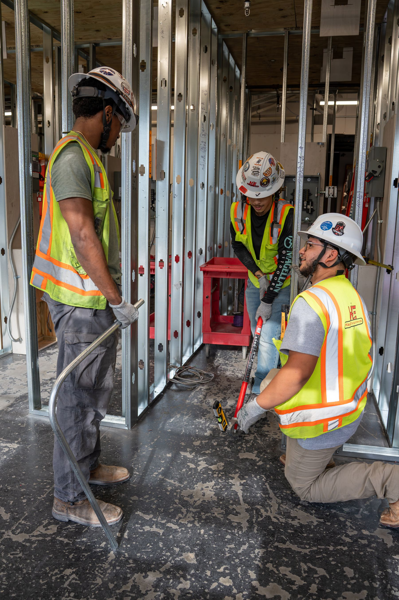

Primary program
5K Electrical Apprenticeship Program
A four-year, earn-while-you-learn pathway for eligible employees. Registered with the U.S. Department of Labor and based on the NCCER curriculum, the program combines classroom instruction, hands-on lab work, real-world jobsite experience, and mentorship from experienced journeyman electricians.
Apprentices progress through electrical foundations, core skills, applied practice, and advanced skills and leadership. Training includes electrical theory, National Electrical Code, wiring methods, safety, conduit bending, blueprint reading, and troubleshooting.